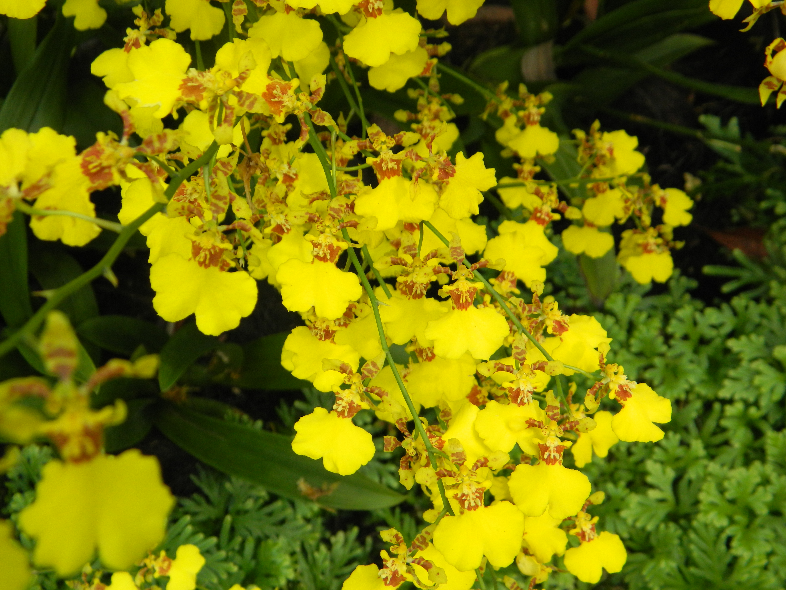
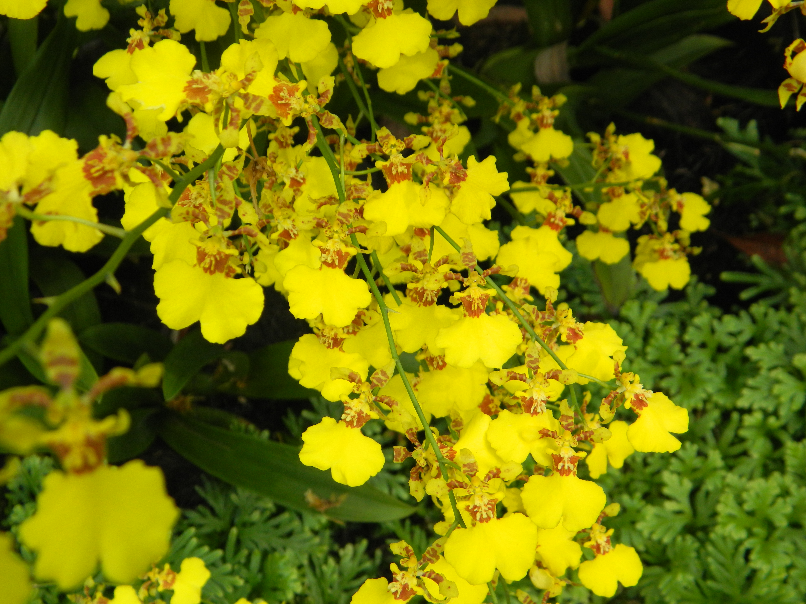

Singapore Experience
In the summer of 2014 I went on a study tour to Singapore with my Global Journalism class. It was my first time to Asia and my first time out of the country, besides Canada. I was really nervous for the trip leading up to it, epsecially the flight. But, once I got there I immediatly loved it. Even though Singapore is so small, there is so many great and interesting things to see and do, all within a few minuett subway ride or walk. Some areas were very true to their herritage, such as the Malay Herritage Center, Little India, and China Town. Other areas were extremly high tech and futuristc. The city is filled with underground malls, you can find 5 on every corner. There is also an island, Sentosa, with tons of attractions and theme parks, here I went zip lining and sky louging. Here are a few of the pictures I took while I was there.
Singapore's National Garden
On the first day of the trip we went to the national garden of Singapore. There were so many cool flowers and waterfalls. One part of the garden that I thought was really cool was an area they had dedicated to all of the presidents of the United States, each one had their own flower based on their personality and life. Even some of the first lady's had their own flowers too.
 

River Cruise in Clark Que
One must see do attraction when you are in Singapore is the river cruise. The cruise is about an hour and very senic. First you see a bunch of shops, and then you go out into the middle of the rier where you get to look at an area of skyscrappers, which is the financial district, and then some of Singapores iconic structures, like the Singapore Flyer and the Marinia Bay Sands hotel.
Gardens by the Bay
Gardents by the Bay is a really cool and futuristc garden. It is inside these all glass, and really huge, orb, looking structures. In one of the orbs there is a giant water fall that you get to climb up to the top of. In the other orb it is all flowers, including flowers that represent most countries or areas of the world. While I was there, there was a lot of photoshoots going on, some for weddings, and even some with models for advertisements.
Singapore Flyer
The Singapore Flyer is like the London Eye of Singapore, except taller. Going up was pretty scary, but the views were worth it.
Marina Bay Sands Hotel/ Skypark
Marina Bay Sands Hotel is the nicest hotel that I have ever been in. Inside is Singapore's only casino, tons of expensive stores, and really nice and fancy decorations. On the top floor, floor 65 there is a skypark that non guests at the hotel can go on. It is a great spot for pictures because you can see all parts of the city.
div class="container">